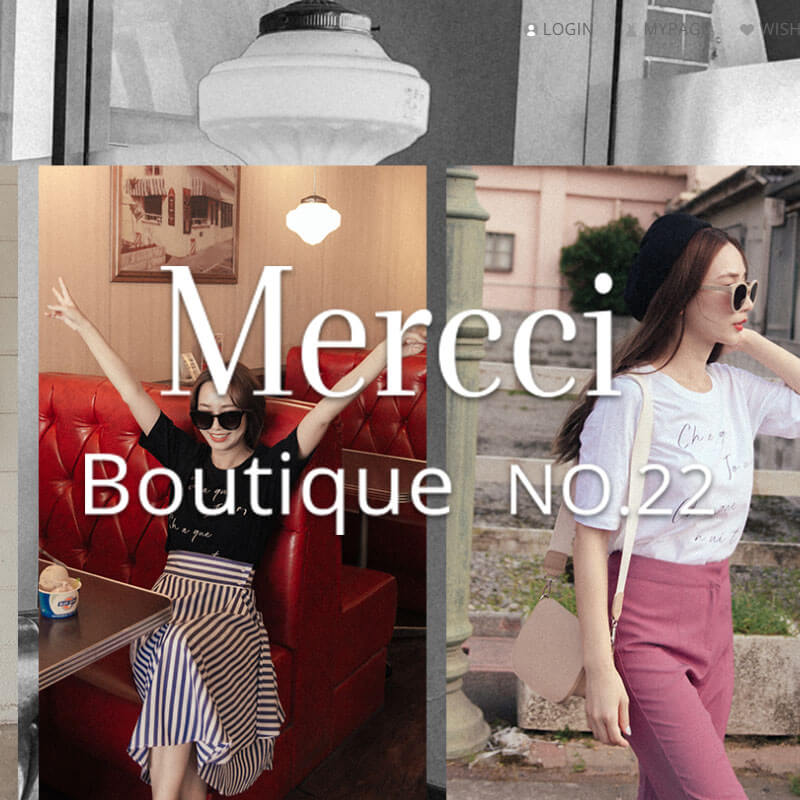
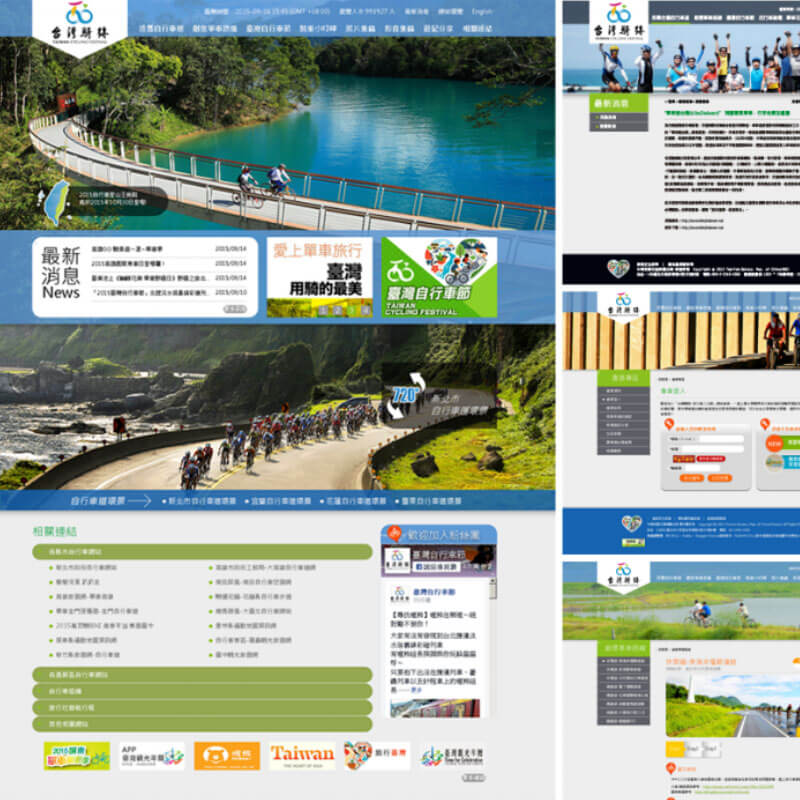

Hello !
I'AM A F2E DEVELOPER.
嗨，我是一位前端工程師
我曾任於服飾電商公司，負責維護與擴增前端功能
我寫 JavaScript HTML 和 CSS，並使用 node.js 作為我的開發環境
我了解主流瀏覽器運作模式，擁有撰寫相容各裝置的前端整合開發經驗
多個 framework / library 的使用或開發經驗
使用 node.js 編譯、打包、打造有效的開發環境
熟悉 git 操作，了解多人共同開發多專案 submodule 流程，擁有良好的團隊合作與溝通能力
並且了解 RESTful API 串接，並能有效與後端工程師討論/設計需要的 API 格式
以下是更多關於我的資訊
About:
我出生於 1989/7/18 ，來自專業平面設計背景的前端工程師，曾任大型資訊網網頁設計師3年，電子商務前端工程師3年。我擅於與設計師和工程師溝通，能做為良好橋梁，討論出方案解決需求，我曾參與的專案如下。
- Pazzo 女裝購物網 負責項目: 網站維運 / 改版，單元擴增，使用JS動態渲染HTML內容。
- Meier.Q 女裝購物網 負責項目: 網站維運 / 改版，單元擴增，使用JS動態渲染HTML內容。
- Mercci22 女裝購物網 負責項目: 網站維運 / 改版，單元擴增，使用JS動態渲染HTML內容。
 Genquo 服裝購物網 負責項目: 網站維運 / 改版，單元擴增，使用JS動態渲染HTML內容。
Genquo 服裝購物網 負責項目: 網站維運 / 改版，單元擴增，使用JS動態渲染HTML內容。- 交通部觀光局 花東縱谷國家風景區資訊網負責內容: 維運標案設計，首內頁改版。
- 交通部觀光局 東北角暨宜蘭海岸國家風景區資訊網負責內容: 維運標案設計，首內頁改版。
- 交通部觀光局 馬祖國家風景區資訊網負責內容: 維運標案設計，首內頁建置。
- 交通部觀光局 自行車入口網負責內容: 維運標案設計，首內頁改版。
- 交通部觀光局 2015、2013台灣燈會資訊網負責內容: 維運標案設計，首內頁建置。
我所使用的工具與曾使用過的框架如下
- 常用框架：
- React
- Vue
- requirejs
- jquery
- 編譯工具與模組化工具：
- node.js
- browserify
- Gulp
- bable(react / ES6)
- 常用預處理器：
- pug
- SASS
我的其他個人時間會撰寫編輯 HTML 之後台小工具，個人作品放置於 GitHub，歡迎至 我的 GitHub 帳號觀看。
若您認為我的能力能為您所用(或是只是想跟我聊聊)，歡迎聯繫我。
我的電子郵件 1l3y93rmp·gmail.com ·=@